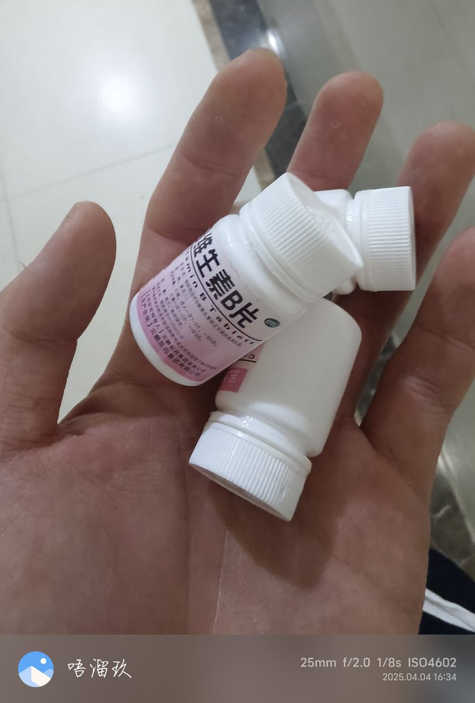
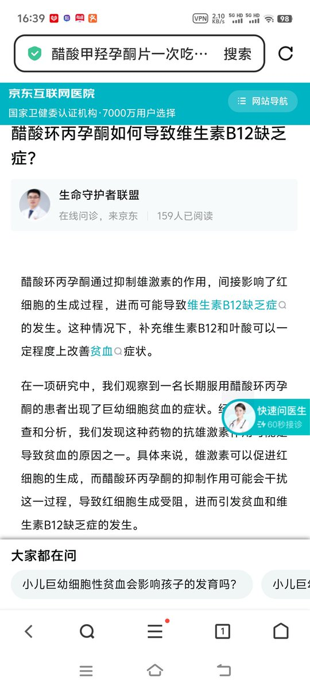
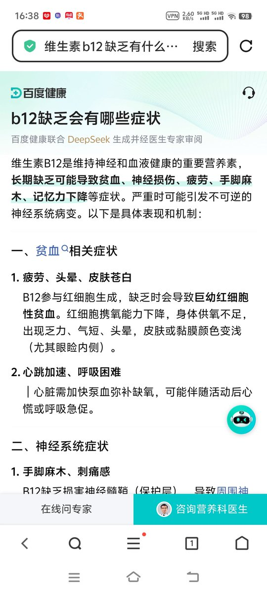

🍀🍥竹蜻蜓🍥🍀
@zqtlovekris99
@8nuecLav 因为没常识，基本用药都不一定知道怎么用。od还敢把两种有冲突的药同时o，你还指望他们知道补剂疑似有点太高看你推人的学历水平了



卤肉酱（🐟🐱）和妹妹🍡
@8nuecLav
怎么面基过的这么多（小药娘/跨性别女性/男转中性X，使用孕酮类激素（色谱龙：醋酸环丙孕酮、黄体酮：孕酮、日色：氯地孕酮）抗雄的时候都不补充维生素B12的？
（体外摄入孕酮类激素容易造成维生素B12缺乏，可导致神经性病变，或易抑郁）
ps：一瓶复合维生素B药片也就几块钱，网购更便宜。一天一片即可 https://t.co/BXSfqRINOE